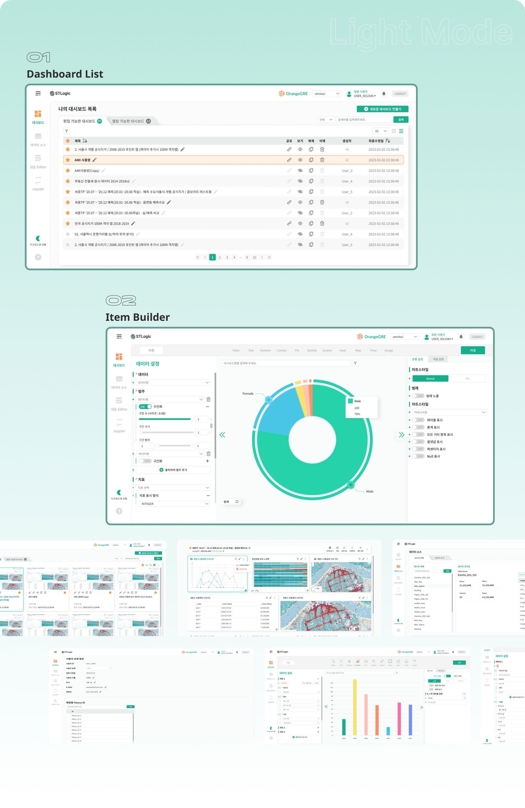
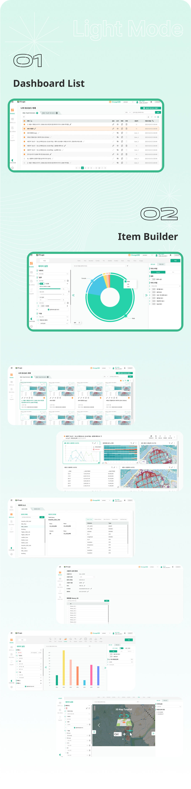
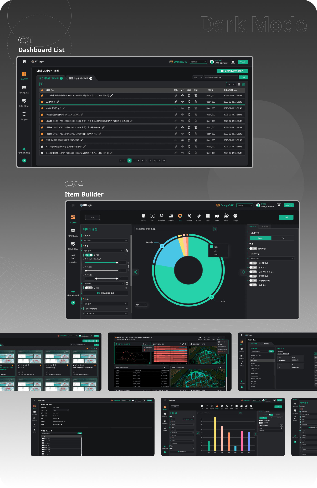
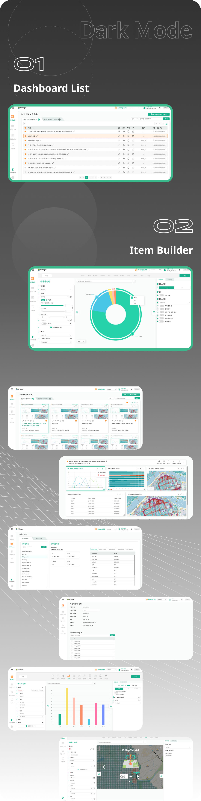

project preview
Orange GRE 솔루션
UI/UX 고도화
2023.03
Scroll

overview
Orange GRE
Orange GRE
솔루션
Orange GRE은 지형정보 시각화 솔루션으로, 사용성과 디자인을 개선하고 웹 퍼블리싱을 통해 웹에서도 원활하게
작동
합니다. 사용자는 솔루션의 기능들을 이용하여 결과를 쉽게 출력할 수 있으며, 라이트와 다크 모드를 선택하여
다양한 환경에서도 잘 볼 수 있습니다. 데이터 시각화에서는 데이터의 유형과 분류를 명확하게 보여주고 편집할 수
있도록 UI 컴포넌트와 화면 구성을 최적화하였습니다.
- Client ST Logic
Keypoint
-
01
누구나 손쉽게 사용할 수 있는 지리정보 시각화 솔루션
- 기능 분석을 통해 사용자가 쉽게 따라갈 수 있는 사용자 여정을 만들었습니다.
- 기능을 알기 쉬운 아이콘으로 표현하고, 각 단계마다 피드백을 명확히 보여주었습니다.
-
02
기능과 데이터 위계의 직관적인 이해
- 기능과 데이터 사이에 연동되거나 상하관계가 있는 경우, 사용자가 그 관계를 직관적으로 파악하고 조작할 수 있도록 그래픽 사용자 인터페이스(GUI)를 구성하였습니다.
-
03
컬러 매뉴얼과 퍼블리싱 가이드
- 솔루션 관리 및 새로운 기능 추가 시 필요한 컬러와퍼블리싱 가이드를 제공하였습니다.
- Orange GRE만의 특징적인 UXUI 가이드라인이 솔루션에 일관되게 적용될 수 있도록 하였습니다.
Design System
-
PretendardBold 쉽고 빠르고, 정확한 공간 빅데이터 시각화 솔루션 Orange GRE
-
프리텐다드Regular 쉽고 빠르고, 정확한 공간 빅데이터 시각화 솔루션 Orange GRE
- # 16AE8A
- # 1A9175
- # 8CDAC7
- # FA902E
- # FFF1E3



